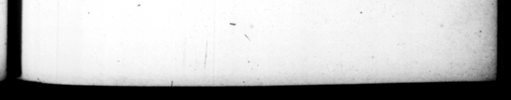

„ ® . c. CESAR CALUIGAL 97 adornadls ad lamina reverſus, e trophie , he return'd by torch;lighe, eorum quidem quĩ ſecuti non eſſent, cimiditatem & ignaviam corripuit: comites autem & paxticipes victoriæ, novo genere ac nomine Co. ronarum donavit : quas diſtinct .: Solis ac Lune ſiderumue ſpecie, atori as apLllavit, Rurſus oblides quoſdam abdugtos è literario ludo, clamque premiſſos, deſerto repente convivio, cum equi tatu inſecutus, veluti profugos AC os in catenis reduxit : in hoc quoque mimo præter um intemperant. Repetita coœna renuntiantes coactum agmen, ſicut erant loricatos ad diſcumbendum adhortatus eſt. Monuit etiam notiſſimo Virgilii verſu, Durarent, ſecundiſque ſe rebus ſeryarent. Atque inter hzc abſentem ſenatum populumque graviſſimo objurgavit edicto, quod Ceſare pres. ante, & tantis. diſcrimunibus objeclo, tempeſtiva com vi via, circum & theatra & ama* broug and dreſſing them up in the manner uphraidimg thoſe that did not follow him with a and 93 3 bat preſented the companions and ſharers of his victory, with a new kind of crowns, and under 4 new name; wit the repreſentation of the ſun, moon and ſtars upon them, which he called exploratoriæ. Again ſome hoſlages by his . order wre taken out of 4 ſchool, and Rang — F; upon notice of which i ately roſe from table, purſis ed them with the horſe, as if they had up with them, be them back in chains, pro _— te an extravagant height in this piece of military farce too, Upon fitting down to table again, nen Jome came to acquaint him that "the army was all come in, he ordered them to fit down as they were in their coats of mail, animating them in the words of that well known verſe of Firgil, To old it out, and reſerve themſelves for happier circumſtances. © In the mean time he chid the ſenate and peo. ple of Rome by a very ſevere procla* mation, For revelling and uenting the diverſions of the Circus and Theatre, and enjoying themſelves in run away, and comi their country houſes, whilſt their emperour was fighting, and ex» poſing his perſon to the greateſt dangers. as , | 46. Poſtremo, quafz perpetraturus bellum, directa acie in litore Oceani, ac balliſtis machiniſq; diſpoſitis, nemine gnaro ac opinante quidnam cœpturus eſſet, repente ut conchas legerent , galeaſque & ſinus replerent, imperavit: * Oceani 2 Capito10 Palatioque debita. Et in in. dicium victoria altiſſimam turrem excita vit: ex mY ut ex Pharo, noctibus ad regen dos navium curſus, ignes emicarent : pronuntiatoque militi donativo, centenis viritim denariis, quaſi omne ex— liberalitatis ſupergrellus, Vite, inquit, y = abite locupletes, 46. At laſt, as if be was reſolved * make ap the "gp 5 ow. awing up his army upon the ſhore the . ib his bal iſſæ and other engines of war, whilſt no body was able to conceive or imagine what be was going to do, on a ſudden be commandthem to gather wp the jog FO On il their belmets and laps of their coats with them, calling them the ſpoils of theOcean due to the Capitol and the Palatium : and raiſed a very high tower as 4 monument of his ſucceſs, to lights upon in the ugbe time fir the Þ Ren my , ireffion of ſhips at ſes 5 ers @ and then promiſing the ſoldi native, of an 2 denarii 4 * 47. Conyerfas
